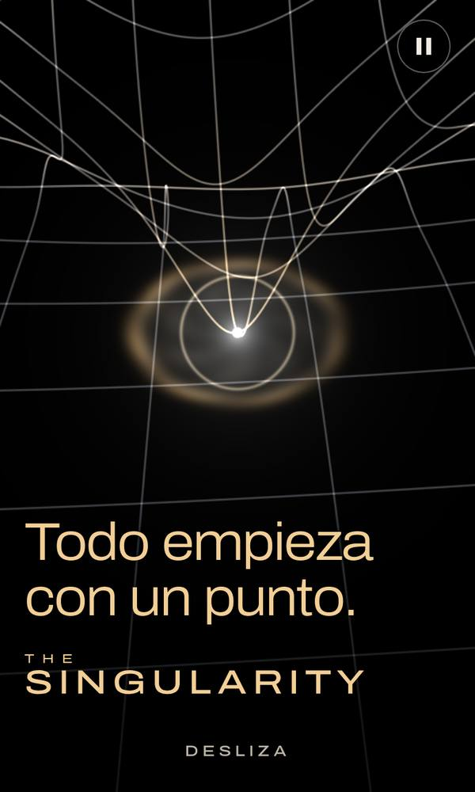
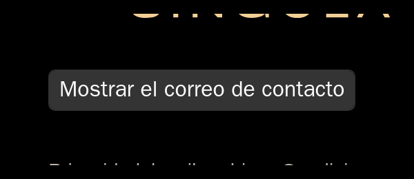
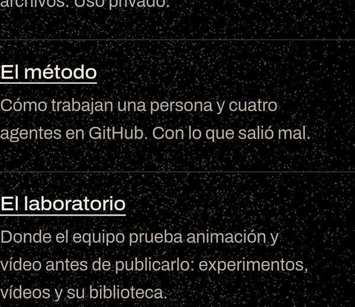
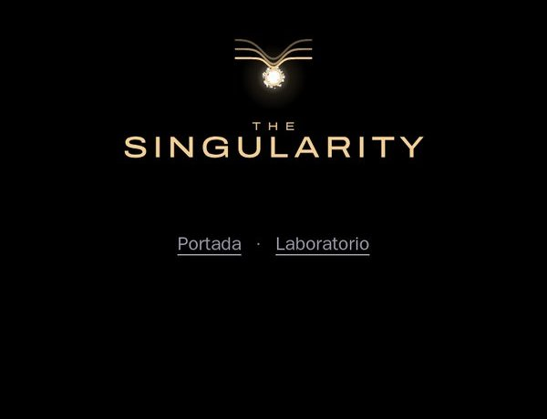

La portada: The Singularity
El espacio curvado hacia el punto que late, el big bang y el logotipo A «Pozo». Es la primera página de la web.

El departamento del equipo para exprimir el navegador. Arriba, lo que espera tu sí. Debajo, lo demás.
Al día: 20 de octubre de 2026. Nueva necesidad en la Biblioteca: IA dentro del móvil, sin nube, con PocketPal AI y Core AI de Apple; la de hacer una app para el móvil ya tiene proyecto que la pide, el asistente de natación. No hay nada pendiente.
No hay nada pendiente. Ningún PR ni ninguna decisión espera tu sí, ni en josebadg.github.io ni en Pvpc-bridge. Cuando llegue algo nuevo, aparecerá aquí.
Aquí acaba lo que te espera. Lo de abajo no necesita nada de ti.
El espacio curvado hacia el punto que late, el big bang y el logotipo A «Pozo». Es la primera página de la web.

El botón «Mostrar el correo de contacto» del final de la portada lleva ahora borde dorado y letra clara sobre negro, y se lee bien. Publicado el 19 de octubre con tu sí.


La portada enlaza al laboratorio: «El laboratorio» es el último elemento de «Lo que ya existe» (PR #21). Y al final de /motor/, debajo del logotipo, hay dos enlaces pequeños en gris, «Portada · Laboratorio» (PR #22); la intro y las escenas no cambian. Publicado el 20 de octubre con tu sí.


La página de pruebas con las cuatro escenas de Charlie: intro, espacio curvado, big bang y vuelta al punto. Oculta a los buscadores. Ya la has visto en tu iPhone; pasar la portada al motor sería otro sí tuyo.

Pruebas sueltas de cada miembro del equipo. No esperan nada de ti: están para jugar y para enseñar ideas antes de abrir un PR.
Ruta, sacada de pdoom-video y de la carpeta «Slopcore» (ver Biblioteca), de una en una: 1) exportar desde el visor, fotograma a fotograma, sus vídeos cortos y una hoja de contacto de cada escena (hecho); 2) la lente gravitacional de pdoom-video en WebGL2 (hecho); 3) la misma lente en WebGPU, para medir cuál va mejor en el móvil (hecha la página; falta la cifra del iPhone). Aparte, el muelle en T (hecho). Lo que viene después sale de la hoja de ruta del laboratorio, de pocos pasos en pocos.
Aún sin prueba suelta. Su sistema visual ya vive en la portada.
Aún sin prueba suelta. Sus textos por escena ya viven en la portada.
Ordenada por necesidad, no por fuente. Cuando necesitemos algo, primero se busca aquí y después fuera: así no reinventamos la rueda, ahorramos créditos y avanzamos con más contundencia. Que algo esté aquí no obliga a usarlo.
Para que quien llegue entienda el proyecto de un vistazo. Así salió la portada The Singularity.
Hecho en casa: la portada y /motor/.
Para que la página avance, retroceda y salte como un vídeo según bajas.
Hecho en casa: /motor/ y el visor de escenas.
Para el agujero negro, el brillo del punto y miles de líneas sin que el móvil sufra.
spacetime-lens.ts) con anillo de Einstein, brillo solo para la señal y líneas en GPU. FichaOjo: licencia MIT, se cita al autor. Su raymarching es demasiado lento para el móvil.
Hecho en casa: el espacio curvado de la portada.
Para sacar vídeos cortos de las escenas y ver muchos momentos de una escena en una sola imagen.
render.ts). FichaHecho en casa: el visor de escenas enlaza un momento exacto.
Para dar por bueno un cambio visual con pruebas y no con «lo he mirado».
Para que el equipo pula escenas con un rumbo escrito y no a ciegas.
La nuestra aún no existe: la biblia es de Maya y el guion de Simone.
Para repartir el trabajo visual entre agentes sin pisarse y sin quemar créditos.
Ojo: cada vídeo de Slopcore costó de 626 a 1.007 dólares en Claude a precio de API, y usa Midjourney y Seedance, de pago, que chocan con nuestra regla de que nada parezca generado por IA. Se aprende el método, no se copia el gasto.
Para convertir un dato, como el precio de cada hora, en una escena que se entiende sin leer.
audio.ts). FichaIdea en casa: las 24 horas del PVPC como una canción. Sin plan todavía.
Para frases que se forman con puntos o se escriben solas.
textPoints) y letras de un solo trazo (stroke.ts). Para más adelante. FichaOjo: el texto sigue en el HTML para que se lea. El efecto solo decora.
Para aprender juntos sin que nadie entregue lo que piensa: quién es miembro, qué es de cada uno, qué pasa a ser común y quién decide el rumbo.
Ojo: la técnica de Google solo funciona con multitudes. En un grupo de cinco, el ruido que protege a cada uno taparía casi todo. Lo que sirve hoy es la forma de trabajar.
Para pasar un texto largo, como una novela, a guion, storyboard y vídeo con herramientas abiertas que ya existen, sin construirlas nosotros. De momento es un piloto de investigación, no un producto.
Ojo: todo esto genera imagen y vídeo con IA, y eso choca con la regla de nuestras webs de que nada parezca generado por IA. Si el piloto sigue, cómo encaja esa regla se decide aparte. Ningún texto de un autor se usa sin su permiso por escrito.
Para llevar un proyecto al móvil como app, o decidir que basta con una web instalable. El asistente de natación ya la pide: será una app propia en SwiftUI, hecha en el Mac con Xcode, que ejecuta modelos en el propio teléfono (ver IA dentro del móvil).
Ojo: cualquier app de iPhone pasa por Apple. Para publicar hace falta su programa de desarrollador, que es de pago, y eso lo decide Joseba.
Para que un modelo de lenguaje o de voz funcione en el propio teléfono, sin conexión y sin mandar datos fuera. Importa sobre todo cuando hay datos personales, como los de menores.
Ojo: cada modelo trae su propia licencia, distinta de la del código. Que todo sea local no quiere decir que esté cifrado: los datos pueden acabar en la copia de seguridad del teléfono.
Necesidades que ya asoman y para las que aún no tenemos nada. Se busca fuera y lo que salga se ficha aquí.
No hay nada en la Biblioteca para eso. Se busca fuera y, lo que sirva, se ficha aquí bajo esa necesidad.
Resuelve: presentar, scroll, luz y gravedad, vídeo, revisar, dirección, equipo, datos y texto.
spacetime-lens.ts): un shader que dobla la luz alrededor de una masa, con anillo de Einstein y anillo de fotones. Es lo más cercano a tu imagen del agujero negro.TREATMENT.md): la idea, la paleta y las reglas por escrito antes de pulir. Nosotros no la tenemos.Resuelve: equipo de agentes.
Resuelve: equipo de agentes, hojas de contacto, revisar con datos y dirección.
Resuelve: equipo de agentes y revisar con datos.
Resuelve: comunidad y conocimiento compartido.
Resuelve: vídeo, revisar y datos y música.
-color_primaries dejan el vídeo sin etiquetar, y -x264-params colorprim=bt709 lo etiqueta bien.<video>, que no da instantes exactos. Se sacan los fotogramas del clip y se dibuja el que toca en cada t, como hace Remotion.Resuelve: adaptar un texto a vídeo y guion y storyboard.
Resuelve: hacer una app para el móvil.
Resuelve: IA dentro del móvil, sin nube y hacer una app para el móvil.
.aimodel. Se convierten en el Mac desde PyTorch con la extensión oficial de Python y se comprimen con su herramienta de optimización. El repo oficial trae recetas por modelo y un paquete Swift con piezas listas: voz a texto, modelos de lenguaje y visión.AIModel(contentsOf:), después loadFunction(named: "main") y run(inputs:).SpeechRecognitionModel(resourcesAt:) y transcribe(audioURL:), del paquete oficial CoreAISpeech. También sirve para dictado en directo.CoreAILanguageModel dentro de LanguageModelSession, la misma forma de trabajar que el modelo de Apple. Puede devolver datos con campos fijos en vez de texto libre.xcrun coreai-build compile o pedirlo antes con AIModel.specialize. Para medir hay una plantilla Core AI en Instruments y un indicador en Xcode, mejor en el iPhone de verdad.--dynamic.SpeechToTextSession y TextToSpeechSession no aparecen en ninguna fuente oficial.Cada recurso nuevo se ficha aquí y se cuelga de la necesidad que resuelve.